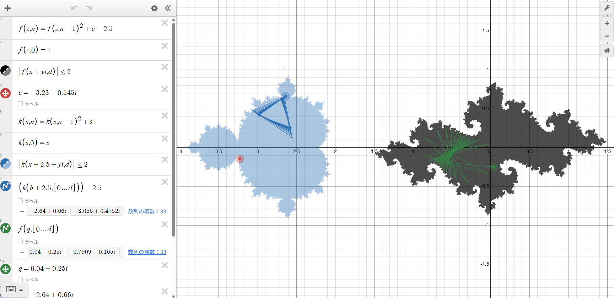
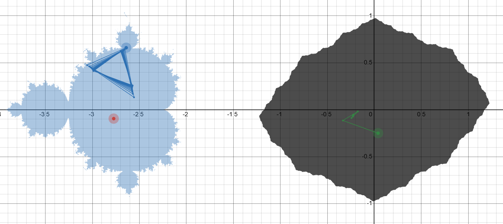
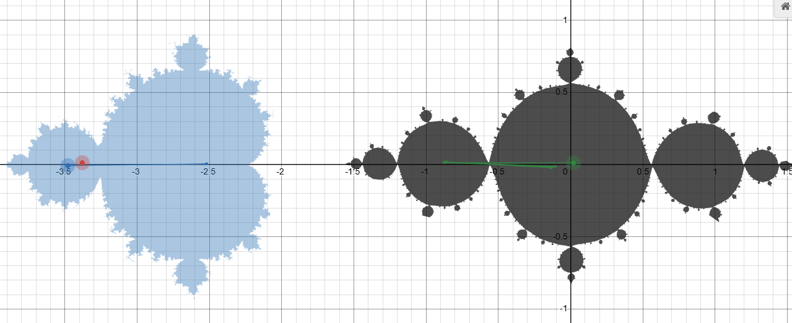
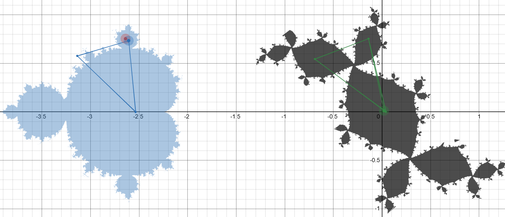
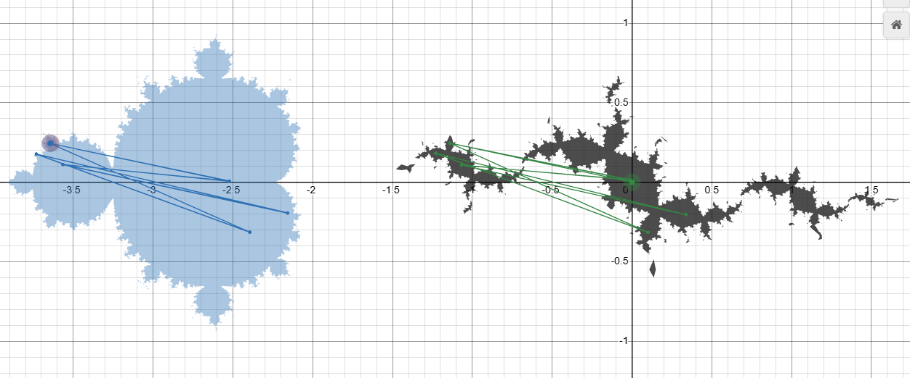
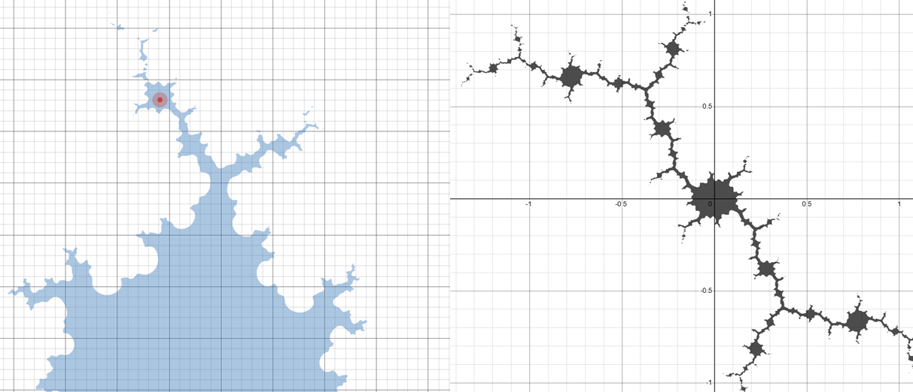

March 23, 2026
Real-Time Observation of the Correspondence Between the Mandelbrot Set, Julia Sets, and Point Orbits
Overview:
This work implements, on Desmos, a system that allows the real-time observation of Julia sets corresponding to individual points in the Mandelbrot set, together with the iterative point orbits on both sides, all within a single screen.
In this implementation, moving a parameter point on the Mandelbrot-set side immediately redraws the corresponding Julia set.
In addition, arbitrary point orbits can be displayed simultaneously on both the Mandelbrot-set side and the Julia-set side.
This makes it possible to observe, without switching views, the correspondence between the Mandelbrot set as a parameter space and the Julia set as a dynamical space in a continuous and interactive way.
A key feature of this implementation is that it makes it possible to observe, in real time and on the same screen,
the periodic structure inside the Mandelbrot set and the branching tendencies that appear in the corresponding Julia sets, together with the associated point orbits.
For example, points in the main cardioid show convergent orbital behavior, and the corresponding Julia sets tend to appear as relatively unified shapes.
By contrast, points in the period-2 component show orbits that alternate between two values, and the corresponding Julia sets tend to exhibit structures suggestive of two-way branching.
Likewise, points in period-3 components show an increase in orbital branching, and the corresponding Julia sets also display tendencies toward three-way branching.
In addition, for points belonging to small self-similar components that appear under magnification, the Julia sets also reveal hierarchical and self-similar structures.
This makes it possible to visually and intuitively investigate how local periodic structures and branching behaviors in the Mandelbrot set are reflected as tendencies in the shapes of the corresponding Julia sets.
Note: All content on this page is originally explained by Reiji in Japanese. The English version is translated by AI and structured by a parent, with Reiji's final approval.
Reiji's Words and Ideas
- This is a Desmos implementation of a system that allows real-time observation of Julia sets corresponding to the Mandelbrot set, together with the orbits of points in each system.
- The Mandelbrot set is shown on the left, and the corresponding Julia set is shown on the right. When the red pointer is moved within the Mandelbrot set, the Julia set determined by that point as a parameter is drawn on the right in real time. Also, when the blue pointer is moved on the Mandelbrot side, the orbit of that point can be displayed using the Mandelbrot-set formula. Likewise, when the green pointer is moved on the Julia-set side, the orbit of that point can be displayed using the Julia-set formula.
- This implementation makes it possible to observe, on the same screen and in real time, the periodic structure inside the Mandelbrot set and the branching tendencies that appear in the corresponding Julia sets, together with the point orbits.
- For example, inside the largest main cardioid of the Mandelbrot set, point orbits tend to converge to a single value, and the corresponding Julia sets also tend to take compact shapes with fewer branches. In the slightly smaller circular component to the left, the orbits tend to alternate between two values, and the corresponding Julia sets show shapes that appear to split into two directions. Furthermore, in the small circular components above and below the main cardioid, the orbits tend to separate into three points, and the Julia sets also show structures suggestive of three-way branching.
- In this way, one can see that there is a visual correspondence between the iterative behavior at each point in the Mandelbrot set and the shape of the corresponding Julia set.
- Also, in the even smaller circular regions attached to the boundary of the period-2 component, the orbit first splits into two and then branches further. In the corresponding Julia sets, the structure is not just a simple two-way split, but includes further branching beyond that.
- When zooming in, one can also observe small Mandelbrot sets that look like detached islands. Although they appear separated visually, lowering the iteration count \(d\) makes it possible to confirm that they are actually connected to the main set by extremely thin structures. In the Julia sets corresponding to such points, one can also observe self-similar structures in which smaller Julia-like forms appear inside the larger one.
- It is very interesting because the boundary can be explored in real time. Please try moving the green pointer as well.
Formulas and Variables
-
The Mandelbrot set is rendered using:
\( k(s,n)=k(s,n-1)^2+s \) \( k(s,0)=s \) \( \left|k(x+2.5+yi,d)\right|\le 2 \)The function name
kis used in order to distinguish it from the function used for the Julia set. -
The Julia set is rendered using:
\( f(z,n)=f(z,n-1)^2+c+2.5 \) \( f(z,0)=z \) \( \left|f(x+yi,d)\right|\le 2 \)where\( c=-3.23-0.145i \)The value of \(c\) is obtained from the position of the pointer using Desmos’s complex-number functionality.
-
The orbit of a point on the Mandelbrot side is drawn using:
\( b=-2.64+0.66i \) \( k\left(b+2.5,[0...d]\right)-2.5 \)
-
The orbit of a point on the Julia side is drawn using:
\( q=0.04-0.25i \) \( f\left(q,[0...d]\right) \)
-
The number of iterations is:
\( d=32 \)

Full View of the Real-Time Observation Screen for the Mandelbrot Set and the Corresponding Julia Set
This is the full display, with the Mandelbrot set on the left and the corresponding Julia set on the right. The red pointer indicates the parameter point on the Mandelbrot side that determines the Julia set, the blue orbit shows the iterative trajectory on the Mandelbrot side, and the green orbit shows the iterative trajectory on the Julia side. This arrangement allows the position of a point in parameter space, its periodic behavior, and the shape of the resulting Julia set to be compared continuously on a single screen.

Julia Set Corresponding to the Main Cardioid
This image shows the Julia set corresponding to a point placed in the largest main cardioid of the Mandelbrot set. On the Mandelbrot side, the orbit shows convergent behavior toward a single value, while the corresponding Julia set appears relatively unified and has few branches. This provides a visual example of the correspondence between convergent dynamics in the main cardioid and a compact Julia-set shape.

A Two-Branching Julia Set Corresponding to a Period-2 Component
This image shows the case where the pointer is placed in the component to the left of the main cardioid, corresponding to period-2 behavior. On the Mandelbrot side, the orbit appears to alternate between two values, and the corresponding Julia set also shows a structure that seems to split into two directions. This gives a clear example of the relationship between a period-2 orbit structure and a two-branching tendency in the Julia set.

A Three-Way Branching Julia Set Corresponding to a Period-3 Component
This image shows the case where the pointer is placed in one of the small circular components attached above or below the main cardioid. On the Mandelbrot side, the orbit appears to cycle among three points, and the corresponding Julia set also shows a structure suggestive of three-way branching. This is an example in which period-3 dynamics and branching tendencies in the Julia set can be visually compared.

A Hierarchical Branching Structure Corresponding to a Small Satellite of the Period-2 Component
This image shows the case where the pointer is placed in a smaller circular component attached to the period-2 component. On the Mandelbrot side, the orbit first splits into two and then branches further. The corresponding Julia set shows not just a simple two-way split, but a hierarchical structure in which additional branching appears within the original branching pattern.

A Complex Julia Set Corresponding to a Small Self-Similar Mandelbrot Component
This image shows the case where the pointer is placed on a small Mandelbrot component that appears like a detached island under magnification. Although it looks visually separate, lowering the iteration count reveals that it remains connected to the main body by very thin structures. The corresponding Julia set exhibits a more complex and hierarchical branching structure, including self-similar internal patterns.
| Output Link | Mandelbrot–Julia Real-Time Explorer — Desmos Graph |
|---|---|
| Application Used |
Desmos Graphing Calculator |
AI Assistant’s Notes and Inferences
One of the major strengths of this implementation is that it treats the Mandelbrot set as a parameter space and the Julia set as a dynamical space, while allowing their relationship to be followed in real time on the same screen. Rather than simply rendering fractal figures, it also visualizes point orbits, making it possible to focus not only on the shapes themselves but also on the underlying differences in iterative dynamics.
- The observation is centered not merely on visual complexity, but on structural distinctions such as convergence, period-2 behavior, period-3 behavior, hierarchical branching, and self-similarity.
- This suggests an empirical attempt to organize the relationship between local structures in the Mandelbrot set and shape changes in the corresponding Julia sets.
- Reiji appears to be interested not only in the visual appearance of fractals, but also in how changes in parameters alter the dynamics, and how those differences in dynamics emerge as differences in form.
- In particular, the observation that small circular regions attached to the period-2 component produce Julia sets that first split into two and then branch further suggests an interest in the relationship between hierarchical periodic structures and shape changes.
- By noticing self-similar structures inside Julia sets corresponding to small Mandelbrot components, he seems to be focusing not just on individual figures, but on the recursiveness of structure itself — how generative rules reappear in different locations and scales.
In summary, this implementation makes it possible to observe, in real time and on a single screen, the periodic structures within the Mandelbrot set and the branching tendencies that appear in the corresponding Julia sets, together with the associated point orbits.